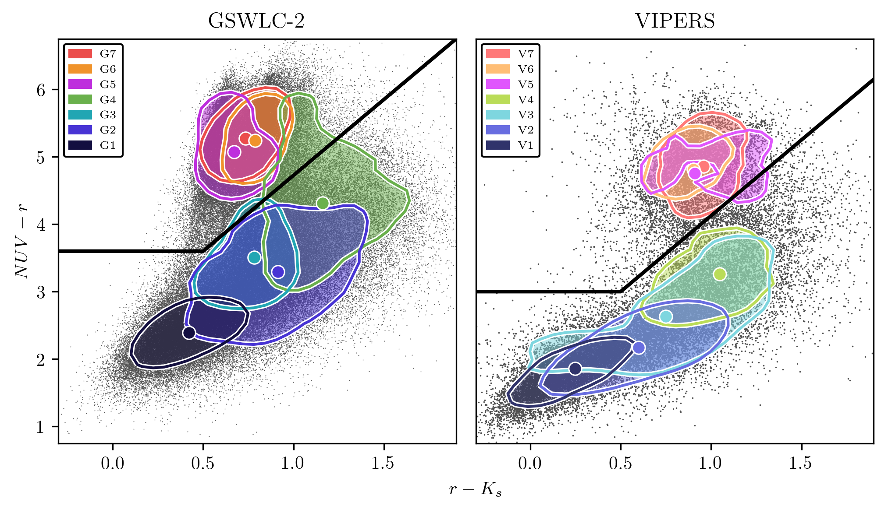
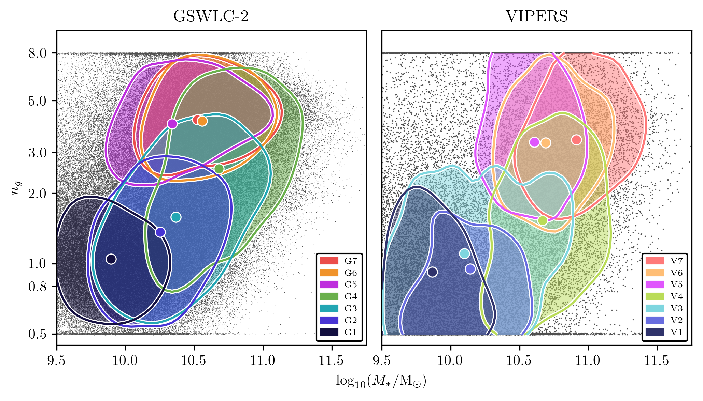
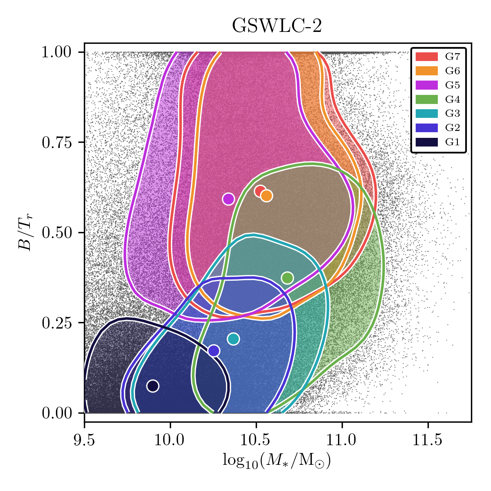
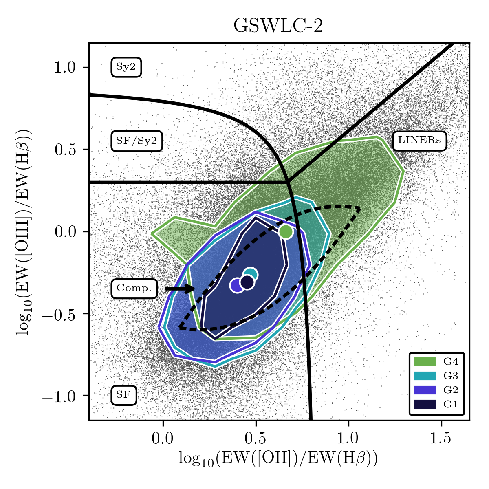
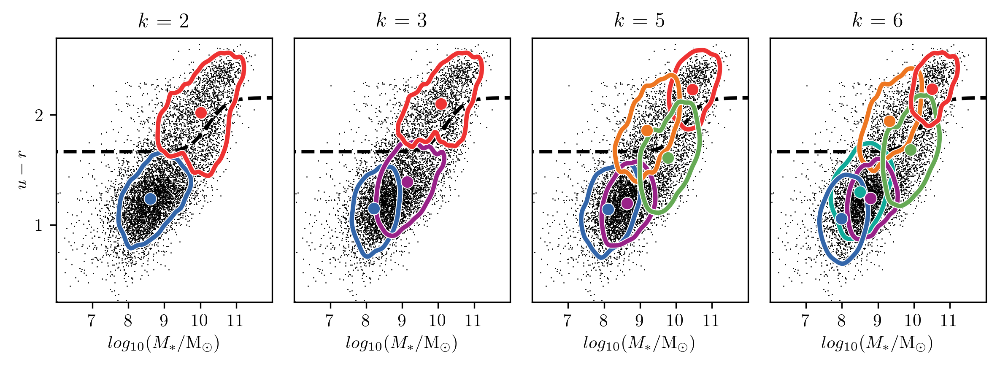

Synergies between low- and intermediate-redshift galaxy population classifications revealed with unsupervised machine learning
(with Malgorzata Siudek, Samir Salim, Ivan Baldry, Agnieszka Pollo, Steve Longmore, Kasia Malek, and collaborators)
This study compares clustering in two samples of galaxies: one from the second edition of the GALEX-SDSS-WISE Legacy Catalogue (GSWLC-2, z ~ 0.06), and one from the VIMOS Public Extragalactic Redshift Survey (VIPERS, z ~ 0.65). Our input features are 9 UV-through IR rest-frame colours, derived from SED fits to observed photometry using CIGALE. The aim to look for substructure to the established colour bimodality of galaxies, to interpret these substructures in the context of galaxy evolution, and to examine how this evolution has changed since the Universe was half its present age. Clustering is conducted using the Subspace Expectation-Maximisation algorithm (SEM), which conducts dimensionality reduction on the fly and models clusters using Gaussian density functions. A model search reveals that both clusters are best partitioned into 7 clusters. They are shown below, in the NUVrK colour-colour plane.
The plot above shows the distribution of the clusters from both samples in the Sersic index versus stellar mass plane. The clusters have been determined on the basis of colours alone, but exhibit a clear morphological division in both panels. Blue clusters, which contain mostly star-forming galaxies, form sequences of rising Sersic index with rising stellar mass, indicating increased bulge prominence. This sequence even includes those G4 galaxies that are passive; so some galaxies become passive without transforming their morphologies. Red clusters, containing passive galaxies, are all very consistent in terms of their distributions in Sersic index. This suggests that their centrally concentrated morphologies are an important part of their passive identities.
Below we focus on the low-redshift sample. Two-component morphological fits, which yield the bulge-to-total ratios shown, substantiate the morphological picture described above. The emission-line classification diagram shows that G4 galaxies are likely to contain LINERs. Hence, their quenching seems to be linked with supermassive black hole feedback, which is also linked with bulge growth.
 
Testing a cosmological galaxy simulation with unsupervised machine learning
(with Ivan Baldry, Rob Crain, Paulo Lisboa, and collaborators)
Check back soon for more info on this project!
Reproducible k-means clustering in galaxy feature data from the GAMA survey
(with Lee Kelvin, Ivan Baldry, Paulo Lisboa, Steve Longmore, Chris Collins, and collaborators)
My first paper reports the results of a test of the k-means clustering algorithm, guided by a unique cluster evaluation approach, as a tool for exploring the large, multidimensional datasets expected from the next generation of extragalactic surveys (e.g. EUCLID). Our Monte Carlo approach identifies suitable values of k for modelling a given sample by considering the reproducibility of clustering outcomes at each value of k relative to those at other values. Reproducibility (a.k.a. stability) is an underrated tool for cluster evaluation. The approach is fast, robust, and malleable. It may be adapted for use with any clustering algorithm and any sample. A Python 3 package that implements the approach is available, along with a notebook providing instructions for its use, at this link.
We tested our clustering approach using a sample of 7338 galaxies taken from the Galaxy And Mass Assembly survey. We characterised the galaxies using the following five features, each relevant to galaxy evolution: stellar mass, u-r colour, Sersic index, half-light radius, and specific star formation rate. Reproducible clustering was found at k = 2, 3, 5, and 6. The clustering outcomes at each of these values of k agreed with established notions of a bimodality of galaxies. The outcomes at the higher of these values of k appeared to indicate distinct evolutionary pathways of galaxies through the green valley, consistent with suggestions in other, recent publications.
